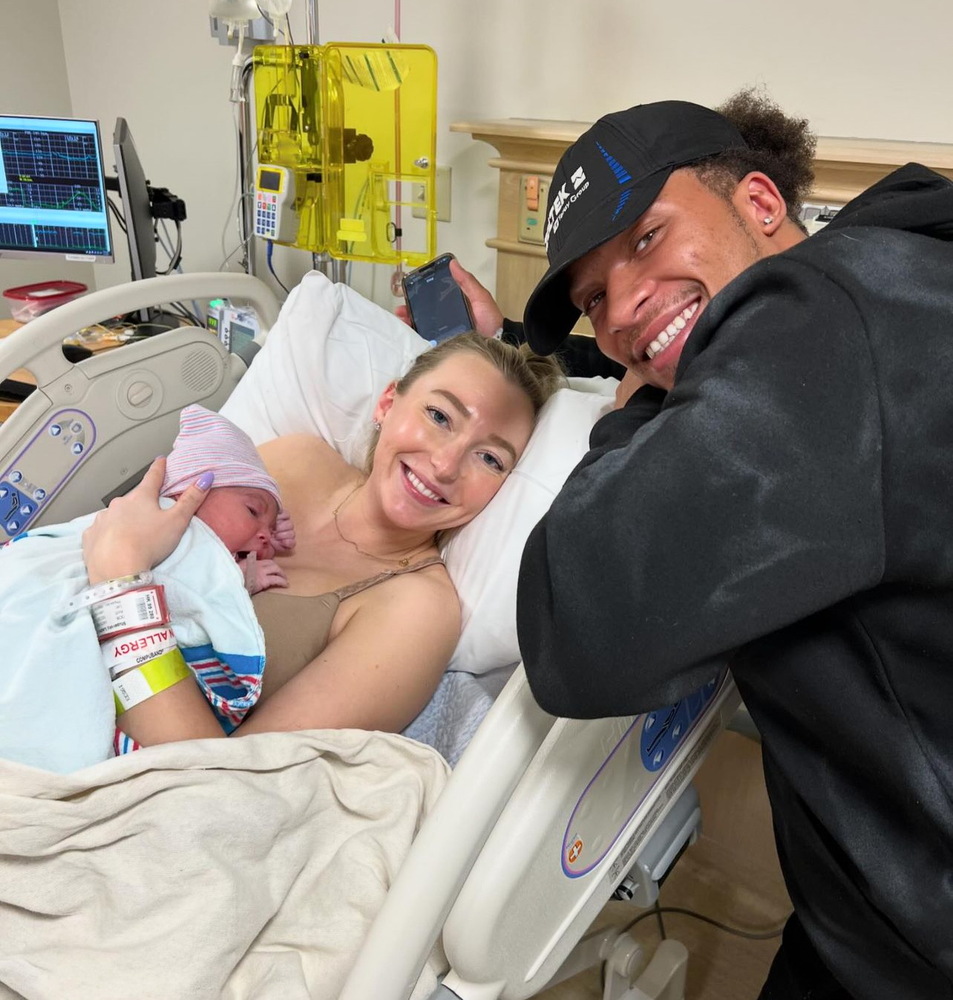
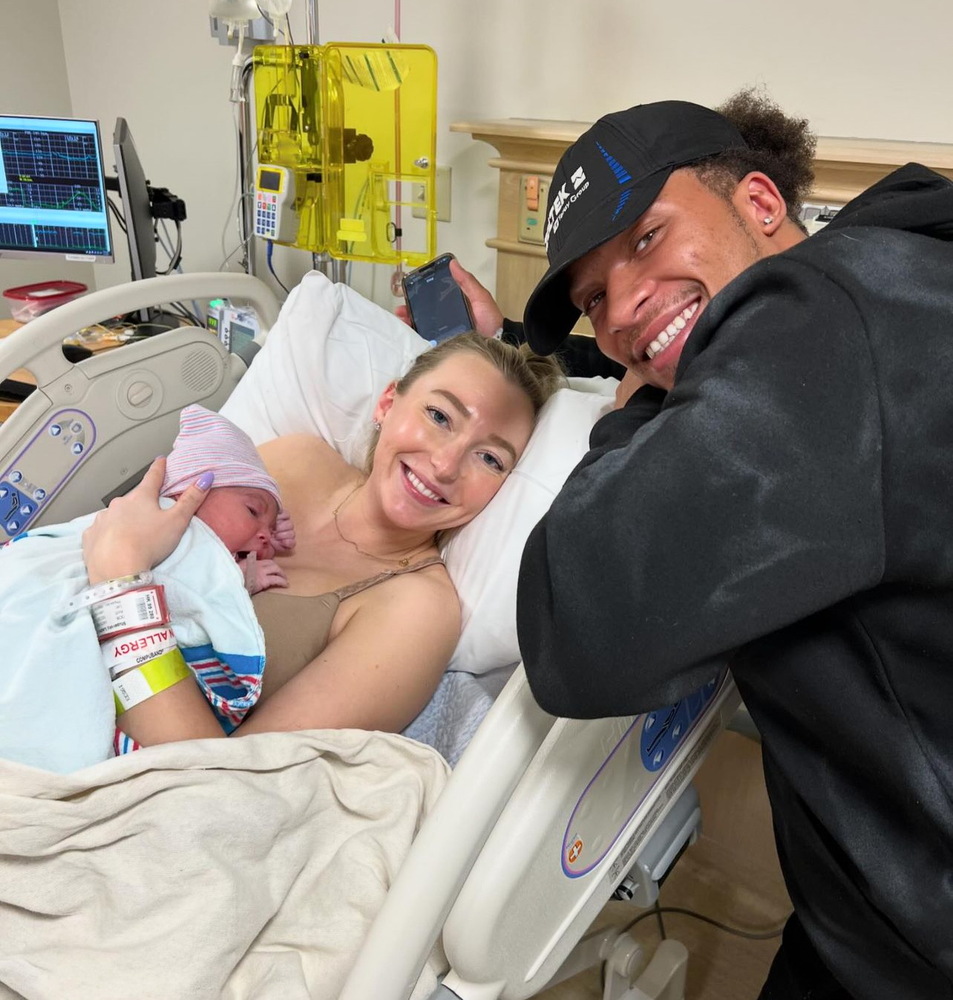

Her first month! (May-June)
This is me and Lilah's mom moments after birth!
Baby slept a lot this month of course!
This is me and Lilah's mom moments after birth!
Baby slept a lot this month of course!

In June she started to open her eyes regularly, being way more active
and also began developing tear ducts!
Little miss Lilah Ann's 3rd month has been so much fun! She is showing so much growth and is smiling all the
time!
Lots of talking, active sleep, lifting her head on her own and holding herself up!
Im so excited to be Lilah's father and can't wait to watch her grow more!
I'm feel like I'm growing just
as fast as she is! She has already taught me so so much!
Lauren is the greatest mom a child could ask for and I thank God everyday for her!
will continue to update
2024
Born 11:49pm 05/02/2024
I love you Lauren!